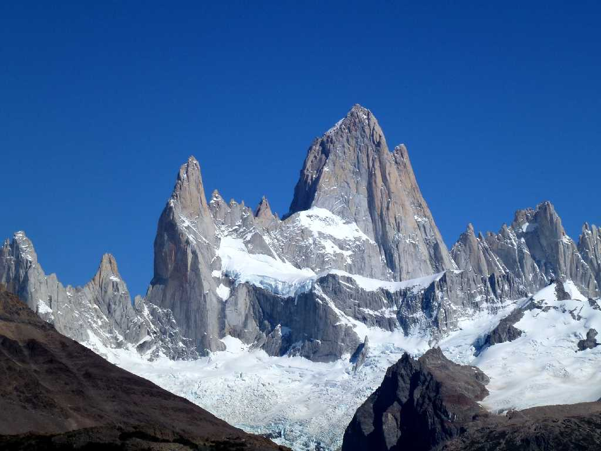
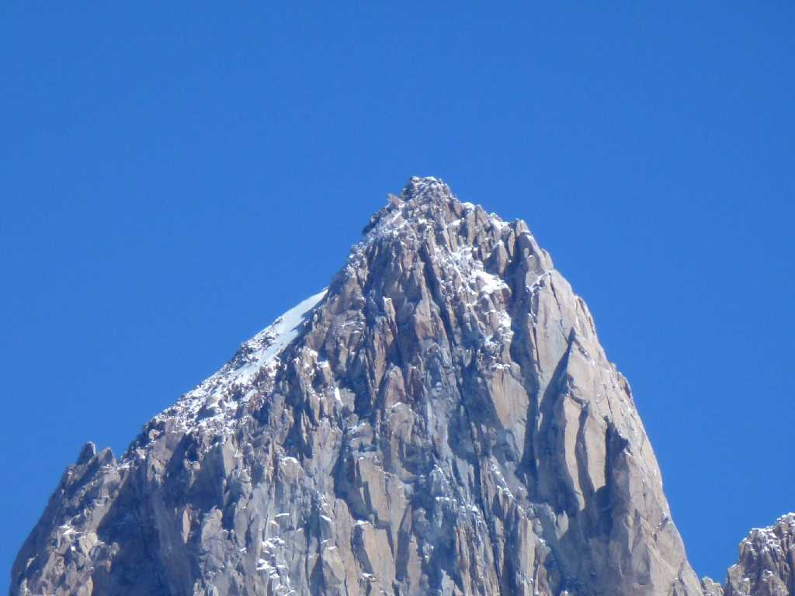
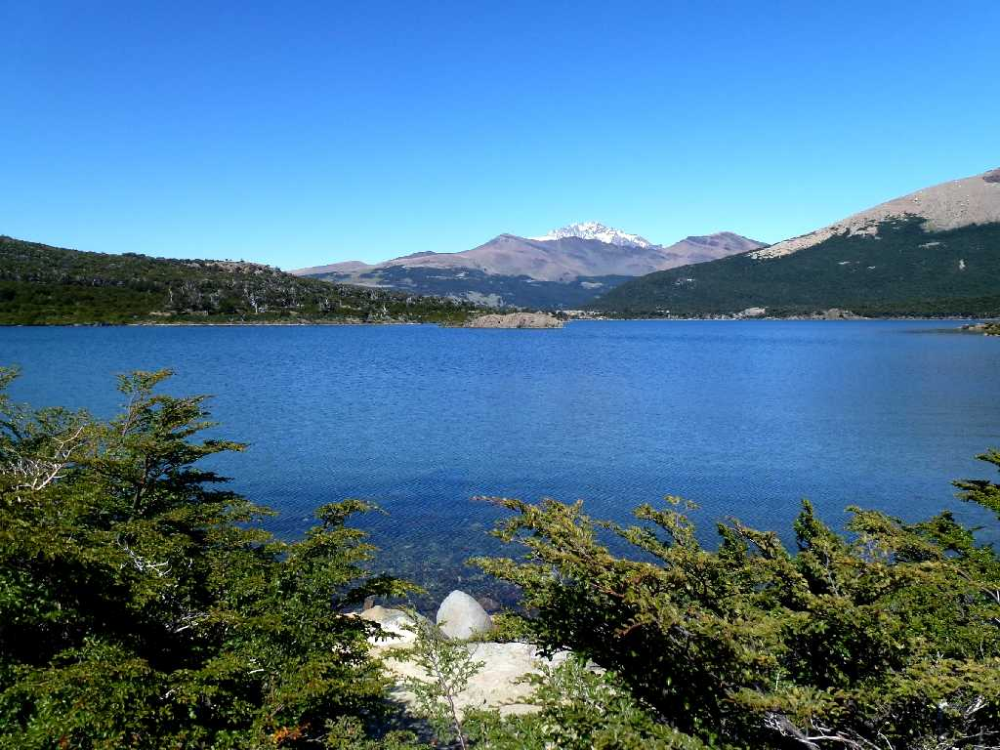
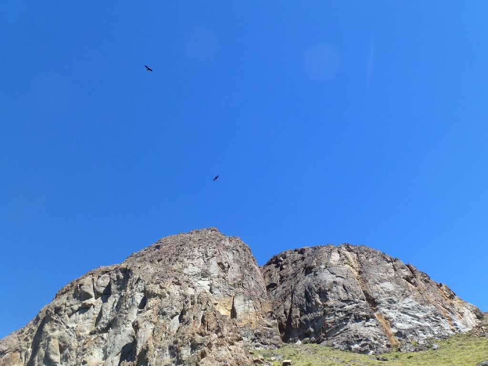
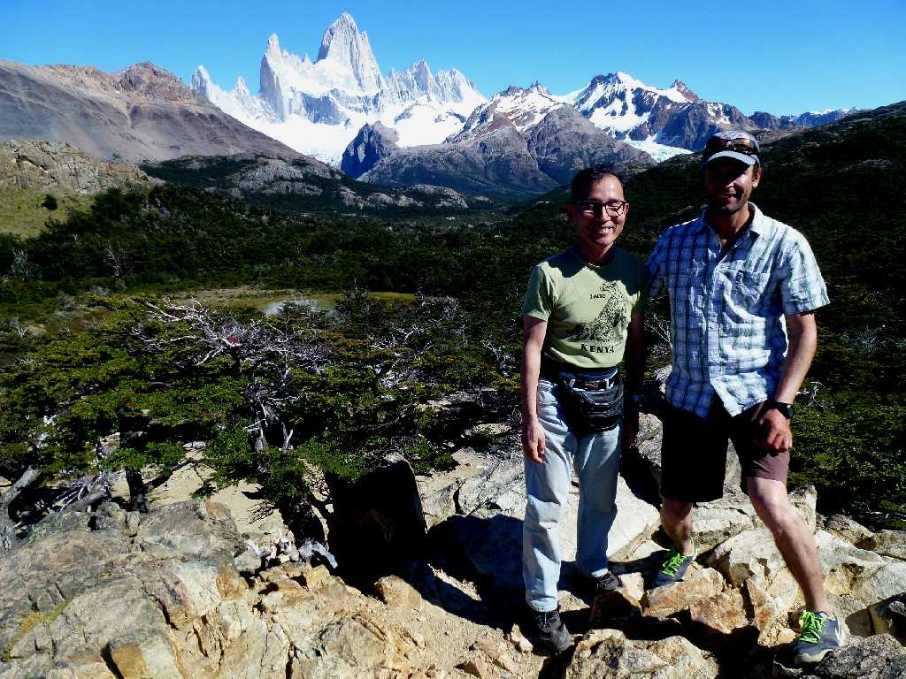

Cerro Fitz Roy 3,375m Mirador del Fitz Roy

Cima Cerro Fitz Roy 3,375m Mirador del Fitz Roy

Laguna Capri Sendero al Fitz Roy
n
Condor Sendero al Fitz Roy

February 14 2014 Cerro Fitz Roy 3,375m Mirador del Fitz Roy
フィッツロイに二度の登頂に成功したロッククライマーと記念写真